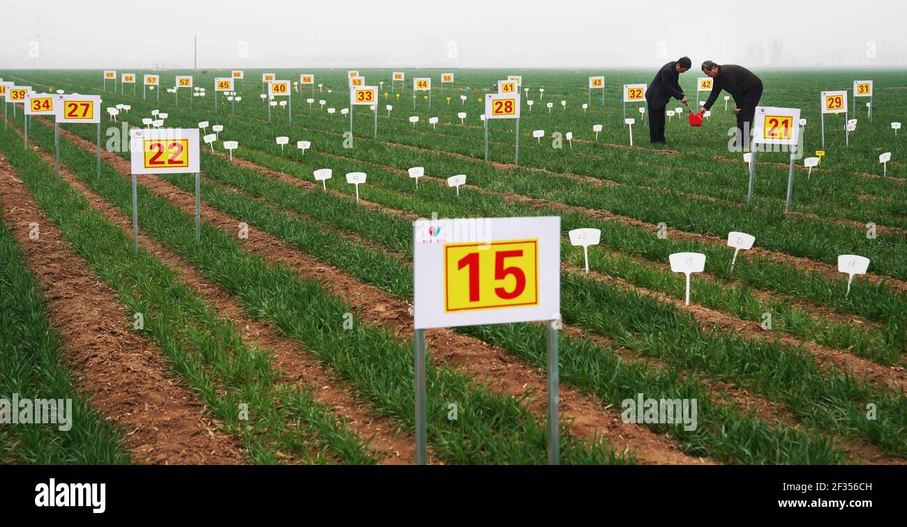
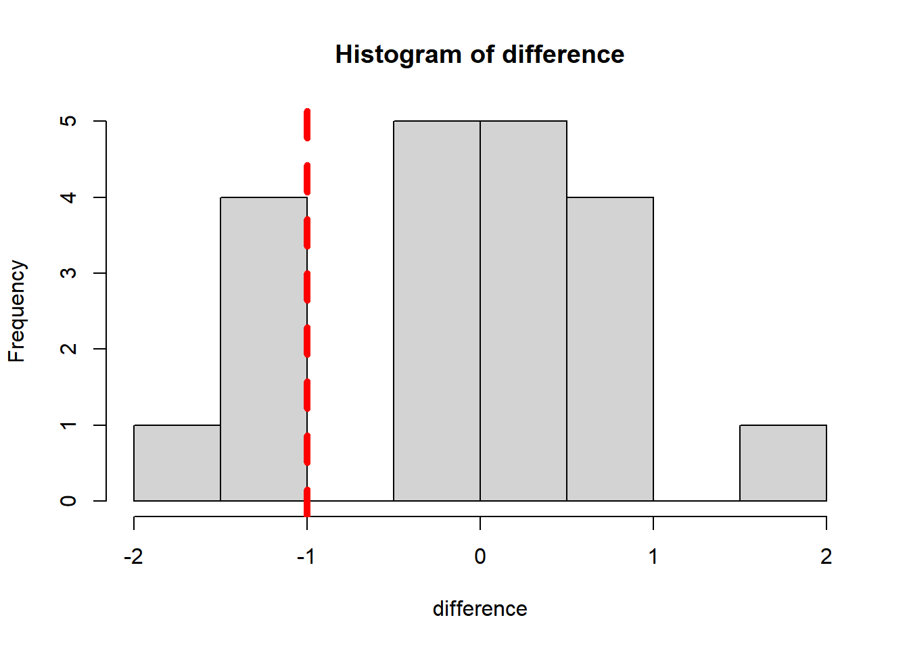

Pre-class reading: [RS] p1-22

Suppose we want to test whether a new technology is useful in
removing pollutant X. To do so, we prepare 6 cases,
randomly select 3 cases and apply the technology, leaving
the rest without treatment. Then we measure X levels from the two groups
(assuming no unit).
Group A (new technology applied): 1.0,
2.0, 3.0
Group B (no treatment): 2.0, 3.0,
4.0
So the mean of group A is 2.0, mean of group B is
3.0, with an observed difference of -1.0. One
may argue the difference is caused by the new technology; while it is
also possible that the difference could be driven by randomization when
no treatment being applied.
So the question is: can the observations back up the usefulness of the new technology?
Recall the processes of hypothesis testing in Section 03.
Given the research question in the previous example, we write hypotheses as:
H0: The new technology can NOT remove X
H1: The new technology does have effects in removing X
Let’s assume H0 is true, what is the chance of randomization leads to the observed or more extreme difference? In other words, what is the chance of grouping leads to the observed or more extreme difference given H0 is true? This can be written as:
\[P(diff <= -1.0 | H_{0} )\] Since the sample size is small, we can write all possible groupings (combinations) for A with R.
# Need `gtools` package
library(gtools)
# Obs from group A
Obs_A <- c(1.0, 2.0, 3.0)
# Obs from group B
Obs_B <- c(2.0, 3.0, 4.0)
# Compute the difference
Obs_difference <- mean(Obs_A) - mean(Obs_B)
print(Obs_difference)## [1] -1# Given H0 is true, we assume that A and B are from the same population
# So the total possible groupings for A is C(6,3)
Obs_all <- c(Obs_A, Obs_B)
Groupings_A <- combinations(length(Obs_all), length(Obs_A), Obs_all, F)
# Show all possible groupings of A
print(Groupings_A)## [,1] [,2] [,3]
## [1,] 1 2 3
## [2,] 1 2 2
## [3,] 1 2 3
## [4,] 1 2 4
## [5,] 1 3 2
## [6,] 1 3 3
## [7,] 1 3 4
## [8,] 1 2 3
## [9,] 1 2 4
## [10,] 1 3 4
## [11,] 2 3 2
## [12,] 2 3 3
## [13,] 2 3 4
## [14,] 2 2 3
## [15,] 2 2 4
## [16,] 2 3 4
## [17,] 3 2 3
## [18,] 3 2 4
## [19,] 3 3 4
## [20,] 2 3 4Next, we can compute all possible differences:
# Make an empty list
difference <- c()
# Loop all possible grouping methods for A
for(i in 1:dim(Groupings_A)[1]){
# Mean of group A
mean_A <- mean(Groupings_A[i,])
# Mean of group B
mean_B <- (sum(Obs_all)-sum(Groupings_A[i,]))/length(Obs_B)
# Store difference
difference <- c(difference, mean_A - mean_B)
}
# Show all possible differences
print(difference)## [1] -1.0000000 -1.6666667 -1.0000000 -0.3333333 -1.0000000 -0.3333333 0.3333333 -1.0000000 -0.3333333 0.3333333 -0.3333333
## [12] 0.3333333 1.0000000 -0.3333333 0.3333333 1.0000000 0.3333333 1.0000000 1.6666667 1.0000000# Plot all possible differences
hist(difference)
# Add a vertical line
abline(v=Obs_difference, col="red", lwd=5, lty=2)
OK, given H0 is true, what is the chance that grouping
leads to the observed or more extreme difference? From the above plot,
we count that there are 5 cases out of 20
cases that the difference is as extreme or more extreme than
-1.0.
## [1] 0.25The p-value, in this case, is 0.25, which is not a small
value (compared with 0.05). So we can not rule out that
H0, meaning the observations fail to back up the usefulness
of the new technology.
Now change the observations to:
Group A (new technology applied): 0.1,
0.2, 0.3
Group B (no treatment): 2.0, 3.0,
4.0
Re-compute the p-value, see what would change. Can you explain why?
In probability theory, a probability density function (PDF) \(f(x)\), or density of a continuous random variable, is a function that describes the relative likelihood (probability or chance) for this random variable \(X\) to take on a given value \(x\).
Probability density function is defined by following formula: \[ P(a \le X \le b) = \int_a^b f(x) ~ dx \]
Suppose we want to test another new technology, to check whether it
is useful in increasing student’s scores. To do so, we
recruit 9 students, randomly select 5 of them
to apply this technology, leaving the rest students without treatment.
Then we measure scores from the two groups:
Group A (new technology applied): 2.0,
3.0, 4.0, 5.0,
6.0
Group B (no treatment): 1.0, 2.0,
3.0, 4.0
Do the observations back up the usefulness of such new technology?
Please use a significant level of 0.10.
Suppose we want to test another new technology, to check whether it
has impact on (could increase or reduce) student’s
scores. To do so, we recruit 9 students, randomly select
5 of them to apply this technology, leaving the rest
students without treatment. Then we measure scores from the two
groups:
Group A (new technology applied): 2.0,
3.0, 4.0, 5.0,
6.0
Group B (no treatment): 1.0, 2.0,
3.0, 4.0
What is the p-value now? Why is it different from the p-value from the previous exercise?